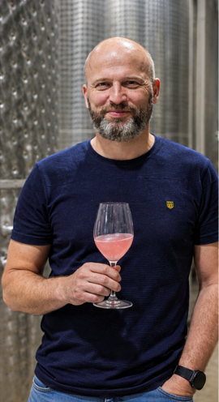
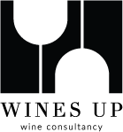
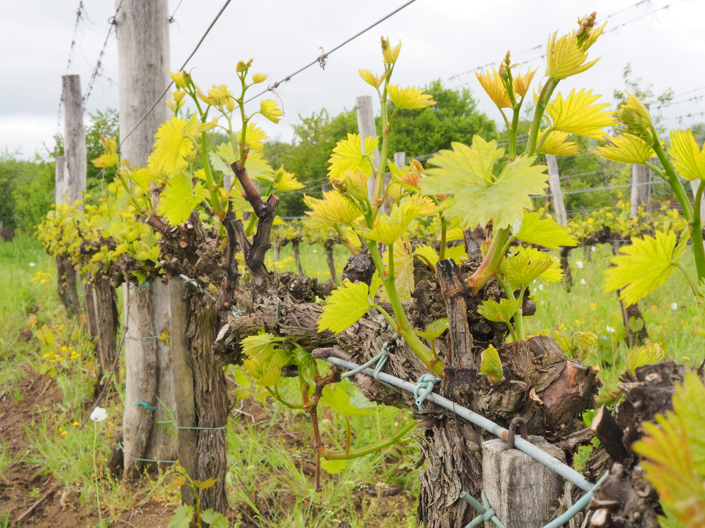
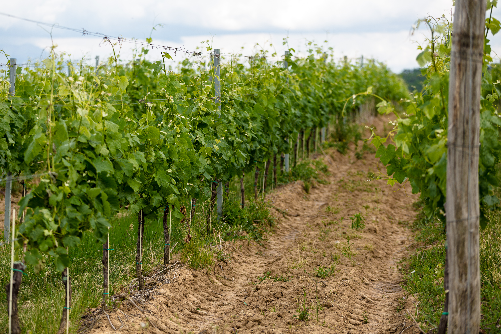
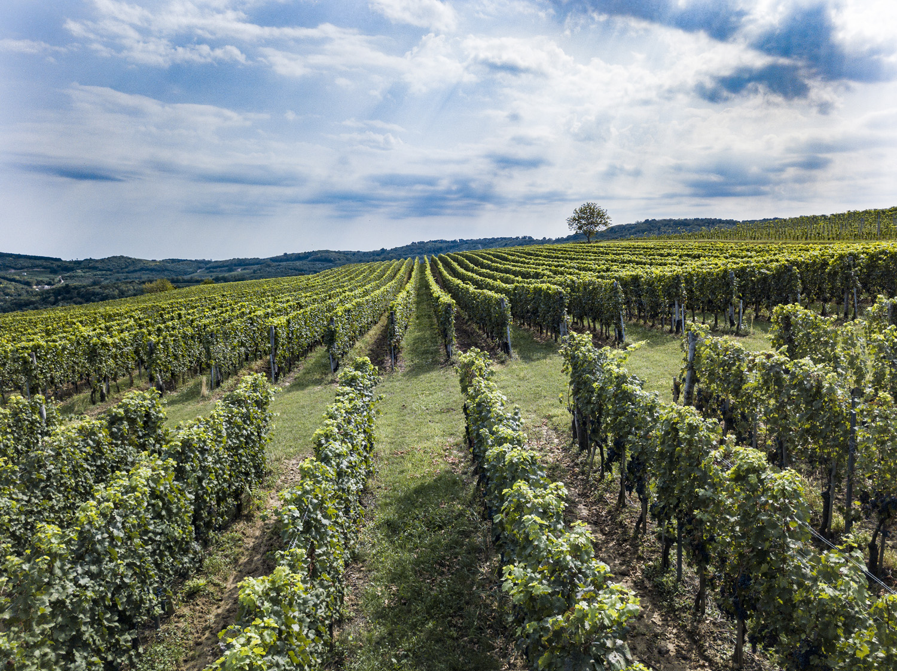
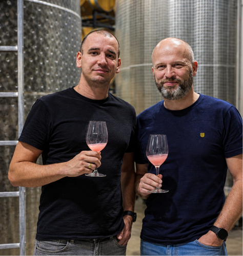
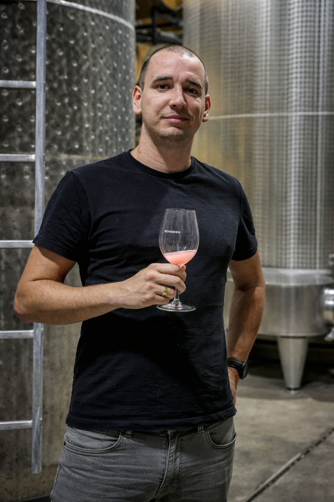

Bordi Örs Péter
[Szerep később]
[Bemutatkozás később]

WinesUpwine consultancyA WinesUp borászatok kereskedelmi és üzletfejlesztési partnere.
Ismerjük a borokat, értjük a piac működését, és tudjuk, hogyan lesz egy jó borból sikeres termék. Nem egyszerűen közvetítünk a borászatok és a vevők között: aktívan építjük az üzleti kapcsolatokat, képviseljük a borászatok érdekeit, és kereskedelmi lehetőségeket teremtünk itthon és a nemzetközi piacokon. Nem nagykereskedőként, hanem a borászat saját értékesítési partnereként dolgozunk, úgy képviselve a ránk bízott pincészeteket, mintha a saját csapatunk részei lennének.
Munkánk pedig nem áll meg az értékesítésnél. A megfelelő alapanyagok és csomagolóanyagok beszerzésétől a termékfejlesztésen és a saját márkák kialakításán át a gyártás-előkészítésig számos területen támogatjuk partnereinket.



A borpiacot nem csak a borokon keresztül ismerjük. Dolgoztunk a kereskedelem és az értékesítés különböző területein, így pontosan tudjuk, mit keresnek a vevők, és mi szükséges ahhoz, hogy egy termék valódi piaci sikert érjen el.


[Szerep később]
[Bemutatkozás később]

[Szerep később]
[Bemutatkozás később]
Helyi tudás. Nemzetközi kapcsolatok.
Ismerjük a magyar borászatokat, a borvidékeket és a hazai borkínálat sokszínűségét. Emellett aktív kereskedelmi kapcsolatokat építünk és tartunk fenn külföldi piacokon, ahol pontosan tudjuk, milyen borokra és milyen üzleti ajánlatokra van kereslet.
A helyi borászati értékeket összekötjük a nemzetközi piacok lehetőségeivel. Nem egyszeri üzletekben, hanem hosszú távú kereskedelmi kapcsolatokban gondolkodunk.
Legyen szó új értékesítési lehetőségekről, exportpiacra lépésről, termékfejlesztésről vagy egy új üzleti együttműködésről, keressünk közösen megoldást.
Kapcsolatfelvétel↗